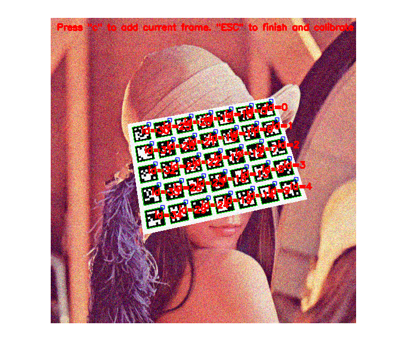

Camera Calibration using ArUco Boards Demo
Calibration using a ArUco Planar Grid board.
To capture a frame for calibration, press 'c', If input comes from video, press any key for next frame To finish capturing, press 'ESC' key and calibration starts.
Sources:
Contents
Parameters
% options vidFile = ''; % Use video file instead of camera as input markersX = 5; % Number of markers in X direction markersY = 7; % Number of markers in Y direction markerLength = 60; % Marker side length (in meters) markerSeparation = 15; % Separation between two consecutive markers in the grid (in meters) dictionaryId = '6x6_250'; % Dictionary id refindStrategy = true; % Apply refined strategy calibrationFlags = { 'UseIntrinsicGuess',false, ... 'FixAspectRatio',false, ... % Fix aspect ratio (fx/fy) 'ZeroTangentDist',true, ... % Assume zero tangential distortion 'FixPrincipalPoint',false % Fix the principal point at the center }; aspectRatio = 1; % Fix aspect ratio (fx/fy) to this value % FixAspectRatio in camera parameters if calibrationFlags{4} camMatrix = eye(3); camMatrix(1,1) = aspectRatio; calibrationFlags = [calibrationFlags, 'CameraMatrix',camMatrix]; end % marker detector parameters detectorParams = struct(); if false %detectorParams.nMarkers = 1024; detectorParams.adaptiveThreshWinSizeMin = 3; detectorParams.adaptiveThreshWinSizeMax = 23; detectorParams.adaptiveThreshWinSizeStep = 10; detectorParams.adaptiveThreshConstant = 7; detectorParams.minMarkerPerimeterRate = 0.03; detectorParams.maxMarkerPerimeterRate = 4.0; detectorParams.polygonalApproxAccuracyRate = 0.05; detectorParams.minCornerDistanceRate = 0.05; detectorParams.minDistanceToBorder = 3; detectorParams.minMarkerDistanceRate = 0.05; detectorParams.cornerRefinementMethod = 'None'; detectorParams.cornerRefinementWinSize = 5; detectorParams.cornerRefinementMaxIterations = 30; detectorParams.cornerRefinementMinAccuracy = 0.1; detectorParams.markerBorderBits = 1; detectorParams.perspectiveRemovePixelPerCell = 8; detectorParams.perspectiveRemoveIgnoredMarginPerCell = 0.13; detectorParams.maxErroneousBitsInBorderRate = 0.04; detectorParams.minOtsuStdDev = 5.0; detectorParams.errorCorrectionRate = 0.6; end % create board dictionary = {'Predefined', dictionaryId}; board = {'GridBoard', ... markersX, markersY, markerLength, markerSeparation, dictionary};
Input source
if ~isempty(vidFile) && exist(vidFile, 'file') == 2 vid = cv.VideoCapture(vidFile); waitTime = 1; % 1 sec else vid = createVideoCapture([], 'aruco'); waitTime = 0.01; % 10 msec end if ~vid.isOpened(), error('failed to initialize VideoCapture'); end
Collect
% collect frames for calibration allCorners = {}; allIds = {}; imgSize = []; hImg = []; hFig = []; while true % grab frame img = vid.read(); if isempty(img), break; end % detect markers [corners, ids, rejected] = cv.detectMarkers(img, dictionary, ... 'DetectorParameters',detectorParams); % refined strategy to detect more markers if refindStrategy [corners, ids, rejected] = cv.refineDetectedMarkers(img, ... board, corners, ids, rejected); end % draw results out = img; if ~isempty(ids) out = cv.drawDetectedMarkers(out, corners, 'IDs',ids); end out = cv.putText(out, ['Press "c" to add current frame. ', ... '"ESC" to finish and calibrate'], [10 20], ... 'FontScale',0.5, 'Color',[255 0 0], 'Thickness',2); if isempty(hImg) hImg = imshow(out); hFig = ancestor(hImg, 'figure'); set(hFig, 'KeyPressFcn',@(o,e) setappdata(o, 'key',e.Key)); setappdata(hFig, 'key',''); elseif ishghandle(hImg) set(hImg, 'CData',out); else break; end drawnow; pause(waitTime); % collect frame switch getappdata(hFig, 'key') case {'space', 'return', 'c'} if ~isempty(ids) fprintf('Frame captured at %s\n', datestr(now())); allCorners{end+1} = corners; allIds{end+1} = ids; imgSize = size(img); else disp('frame skipped, no corners detected!'); end case {'escape', 'q'} disp('Finished collecting frames.'); break; case 'p' pause(5); end setappdata(hFig, 'key',''); end vid.release();
Frame captured at 03-Dec-2017 20:02:08 Frame captured at 03-Dec-2017 20:02:09 Frame captured at 03-Dec-2017 20:02:10 Frame captured at 03-Dec-2017 20:02:12 Frame captured at 03-Dec-2017 20:02:13 Frame captured at 03-Dec-2017 20:02:15 Frame captured at 03-Dec-2017 20:02:16 Frame captured at 03-Dec-2017 20:02:18 Frame captured at 03-Dec-2017 20:02:19 Frame captured at 03-Dec-2017 20:02:21 Finished collecting frames.
Calibration
disp('Calibrating...') % calibrate camera if isempty([allIds{:}]), error('Not enough captures for calibration'); end [camMatrix, distCoeffs, repError, rvecs, tvecs] = ... cv.calibrateCameraAruco([allCorners{:}], [allIds{:}], ... cellfun(@numel, allCorners), board, ... imgSize([2 1]), calibrationFlags{:}); % calibration results fprintf('Calibration Time: %s\n', datestr(now())); fprintf('Image Width: %d, Image Height: %d\n', imgSize(2), imgSize(1)); disp('Flags:'); cellfun(@disp,calibrationFlags); if calibrationFlags{4}, fprintf('Aspect Ratio: %f\n', aspectRatio); end disp('Camera Matrix:'); disp(camMatrix) disp('Distortion Coefficients:'); disp(distCoeffs) fprintf('Average Reprojection Error = %f\n', repError); save camera_parameters.mat -mat camMatrix distCoeffs
Calibrating...
Calibration Time: 03-Dec-2017 20:02:23
Image Width: 512, Image Height: 512
Flags:
UseIntrinsicGuess
0
FixAspectRatio
0
ZeroTangentDist
1
FixPrincipalPoint
0
Camera Matrix:
469.7718 0 259.0107
0 469.5324 251.2255
0 0 1.0000
Distortion Coefficients:
-0.1007 0.2118 0 0 -0.6476
Average Reprojection Error = 0.856354